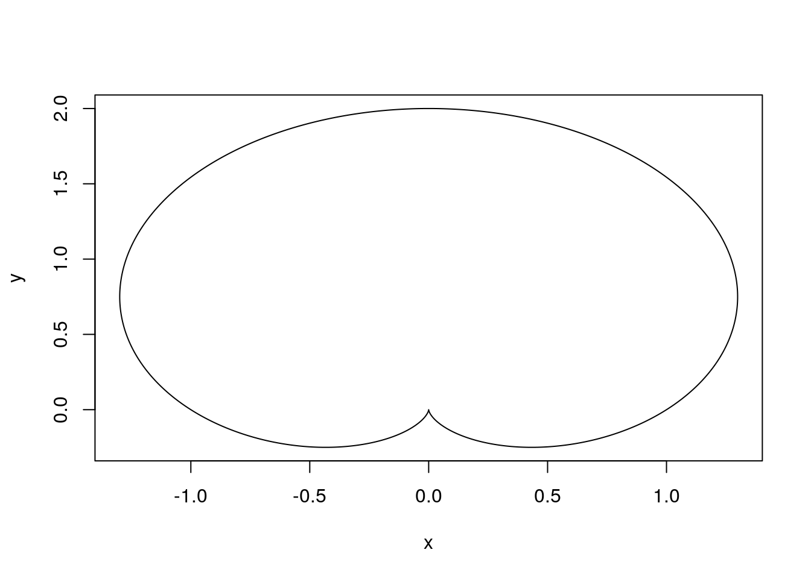
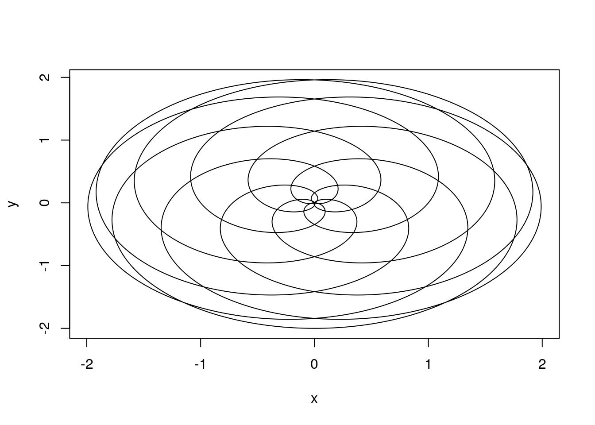
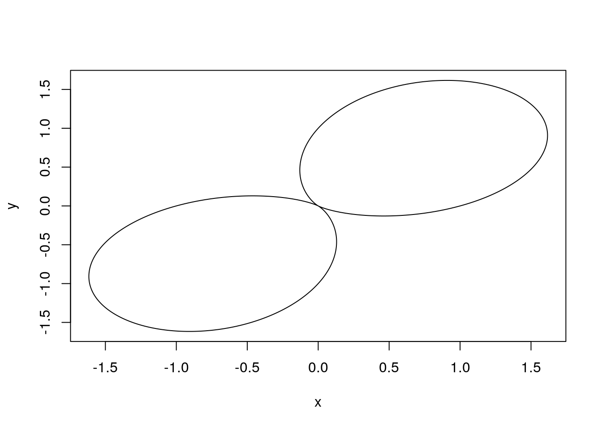
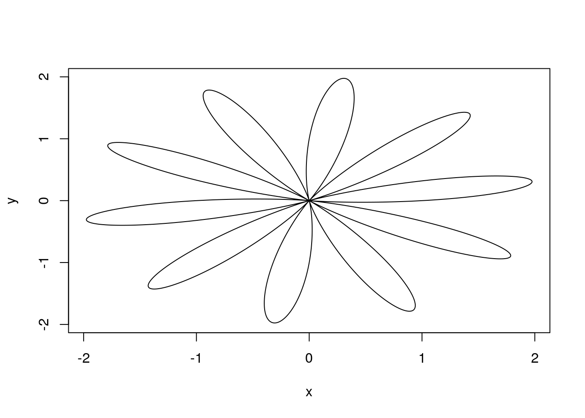
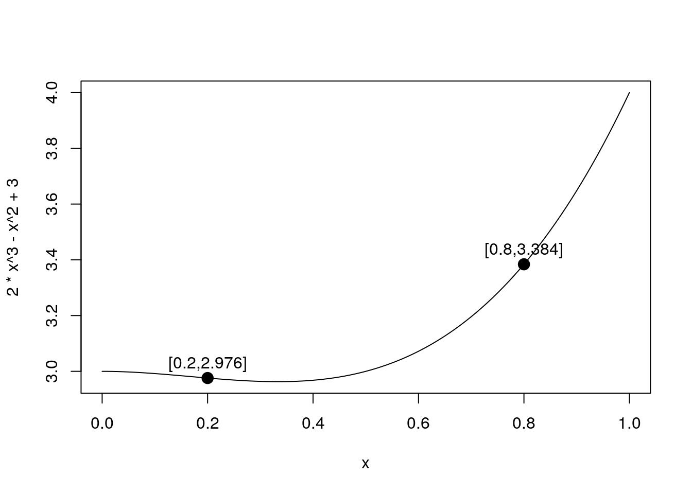

Skonstruuj wektor kwadratów liczb od 1 do 100. Następnie używając operatora dzielenia modulo i funkcji factor() zlicz, które cyfry oraz jak często występują na pozycji jedności w wyznaczonych kwadratach.
import numpy as np
import pandas as pd
wektor = np.arange(1,100+1,1)**2
d = pd.DataFrame({'res':wektor % 10})
print(d['res'].value_counts(sort=False))## 0 10
## 1 20
## 4 20
## 5 10
## 6 20
## 9 20
## Name: res, dtype: int64Zbuduj własne tablice trygonometryczne. Przygotuj ramkę danych, w których zebrane będą informacje o wartościach funkcji sinus, cosinus, tangens i cotangens dla kątów: \(0^{\circ}\) , \(30^{\circ}\) , \(45^{\circ}\) , \(60^{\circ}\) , \(90^{\circ}\) . Zauważ, że funkcje trygonometryczne w R przyjmują argumenty w radianach.
# radiany na stopnie:
rad2dec <- function(x) x*pi/180
# liczymy:
x = rad2dec(c(0,30,45,60,90))
data.frame(sin = sin(x), cos = cos(x), tan = tan(x), atan = 1/tan(x))## sin cos tan atan
## 1 0.0000000 1.000000e+00 0.000000e+00 Inf
## 2 0.5000000 8.660254e-01 5.773503e-01 1.732051e+00
## 3 0.7071068 7.071068e-01 1.000000e+00 1.000000e+00
## 4 0.8660254 5.000000e-01 1.732051e+00 5.773503e-01
## 5 1.0000000 6.123234e-17 1.633124e+16 6.123234e-17import numpy as np
import pandas as pd
# radiany na stopnie:
rad2dec = lambda x: x*np.pi/180
# liczymy:
x = rad2dec(np.array([0,30,45,60,90]))
print(pd.DataFrame({'sin':np.sin(x),'cos':np.cos(x),'tan':np.tan(x),'atan':1/np.tan(x)}))## -c:8: RuntimeWarning: divide by zero encountered in true_divide
## sin cos tan atan
## 0 0.000000 1.000000e+00 0.000000e+00 inf
## 1 0.500000 8.660254e-01 5.773503e-01 1.732051e+00
## 2 0.707107 7.071068e-01 1.000000e+00 1.000000e+00
## 3 0.866025 5.000000e-01 1.732051e+00 5.773503e-01
## 4 1.000000 6.123234e-17 1.633124e+16 6.123234e-17Przygotuj wektor 30 łańcuchów znaków następującej postaci: liczba.litera, gdzie liczba to kolejne liczby od 1 do 30 a litera to trzy duże litery A, B, C występujące cyklicznie.
## [1] "1.A" "2.B" "3.C" "4.A" "5.B" "6.C" "7.A" "8.B" "9.C" "10.A"
## [11] "11.B" "12.C" "13.A" "14.B" "15.C" "16.A" "17.B" "18.C" "19.A" "20.B"
## [21] "21.C" "22.A" "23.B" "24.C" "25.A" "26.B" "27.C" "28.A" "29.B" "30.C"## [1] "1.A" "2.B" "3.C" "4.A" "5.B" "6.C" "7.A" "8.B" "9.C" "10.A"
## [11] "11.B" "12.C" "13.A" "14.B" "15.C" "16.A" "17.B" "18.C" "19.A" "20.B"
## [21] "21.C" "22.A" "23.B" "24.C" "25.A" "26.B" "27.C" "28.A" "29.B" "30.C"Wczytaj zbiór danych daneO i napisz funkcję lub pętlę sprawdzającą typ i klasę każdej kolumny tego zbioru.
Patrz załącznik z opisem zbiorów danych.
daneO = read.table("http://www.biecek.pl/R/dane/daneO.csv", sep=";", h=T)
for (i in 1:ncol(daneO))
print(paste(colnames(daneO)[i], "klasa:", class(daneO[,i]), "typ:", typeof(daneO[,i])))## [1] "Wiek klasa: integer typ: integer"
## [1] "Rozmiar.guza klasa: integer typ: integer"
## [1] "Wezly.chlonne klasa: integer typ: integer"
## [1] "Nowotwor klasa: integer typ: integer"
## [1] "Receptory.estrogenowe klasa: factor typ: integer"
## [1] "Receptory.progesteronowe klasa: factor typ: integer"
## [1] "Niepowodzenia klasa: factor typ: integer"
## [1] "Okres.bez.wznowy klasa: integer typ: integer"
## [1] "VEGF klasa: integer typ: integer"import pandas as pd
daneO = pd.read_csv("http://www.biecek.pl/R/dane/daneO.csv",sep=";",header=0)
print(daneO.dtypes)## Wiek int64
## Rozmiar.guza int64
## Wezly.chlonne int64
## Nowotwor float64
## Receptory.estrogenowe object
## Receptory.progesteronowe object
## Niepowodzenia object
## Okres.bez.wznowy float64
## VEGF int64
## dtype: objectZ odczytanej ramki danych daneO wyświetl tylko dane z wierszy o parzystych indeksach.
parzyste = 1:(nrow(daneO)/2)*2
parzyste = seq(2,nrow(daneO),2)
parzyste = (1:nrow(daneO)%%2) ==0
daneO[parzyste,]## Wiek Rozmiar.guza Wezly.chlonne Nowotwor Receptory.estrogenowe
## 2 29 1 0 2 (++)
## 4 32 1 0 3 (++)
## 6 33 1 1 3 (-)
## 8 35 2 1 2 (+)
## 10 36 1 1 2 (-)
## 12 37 1 0 3 (-)
## 14 38 1 1 3 (++)
## 16 40 1 1 2 (+)
## 18 41 1 1 2 <NA>
## 20 41 1 0 3 (+)
## 22 42 1 1 2 (+++)
## 24 42 1 1 2 (+++)
## 26 42 1 0 NA (-)
## 28 43 1 0 3 <NA>
## 30 44 1 0 1 (++)
## 32 44 2 0 2 (++)
## 34 44 1 1 3 (+)
## 36 44 2 1 3 (-)
## 38 45 1 0 2 (+++)
## 40 45 1 1 2 (++)
## 42 46 1 0 2 (+)
## 44 46 1 0 2 (++)
## 46 46 1 0 2 (+)
## 48 46 1 1 3 (-)
## 50 46 1 0 NA <NA>
## 52 47 1 0 2 (+)
## 54 47 2 0 2 (+++)
## 56 47 1 0 3 (+)
## 58 48 1 1 3 (-)
## 60 49 1 0 1 (++)
## 62 49 1 1 2 (+)
## 64 49 2 1 3 (-)
## 66 50 2 1 1 (-)
## 68 50 1 0 2 (++)
## 70 50 2 1 2 (++)
## 72 50 2 0 3 (-)
## 74 50 2 1 3 (+++)
## 76 50 2 1 NA (+++)
## 78 51 1 1 2 (++)
## 80 51 1 0 2 (+)
## 82 51 2 0 3 (-)
## 84 51 2 1 NA (-)
## 86 52 1 0 2 (++)
## 88 52 2 1 2 (+)
## 90 52 1 0 NA (-)
## 92 53 1 0 3 (-)
## 94 55 1 0 1 (+)
## 96 55 1 0 NA <NA>
## Receptory.progesteronowe Niepowodzenia Okres.bez.wznowy VEGF
## 2 (++) brak 53 1118
## 4 (++) brak 26 1793
## 6 (++) wznowa 36 2776
## 8 (++) brak 38 3827
## 10 (++) brak 37 834
## 12 (+) wznowa 40 3331
## 14 (+++) wznowa 16 2759
## 16 (++) brak 27 3038
## 18 <NA> brak 19 1981
## 20 (-) brak 18 989
## 22 (++) wznowa 29 5994
## 24 (+++) brak 47 532
## 26 (+) brak 33 1531
## 28 <NA> brak 39 1348
## 30 (+) brak 47 2402
## 32 (+++) brak 48 483
## 34 (++) brak 36 596
## 36 (-) brak 53 164
## 38 (++) brak 33 951
## 40 (++) brak 54 1275
## 42 (+++) brak 23 2018
## 44 (+++) brak 42 1197
## 46 (++) brak 51 780
## 48 (+) brak 36 2703
## 50 <NA> brak 28 1526
## 52 (++) brak 31 286
## 54 (+++) brak 33 2442
## 56 (++) brak 38 326
## 58 (-) wznowa 21 5194
## 60 (++) brak 36 4355
## 62 (++) brak 36 3101
## 64 (-) brak 39 189
## 66 (-) brak 28 1485
## 68 (+++) brak 29 118
## 70 (-) brak 33 1694
## 72 (-) brak 39 1738
## 74 (+++) brak 49 3946
## 76 (-) brak 27 7665
## 78 (++) brak 33 629
## 80 (+++) brak 50 223
## 82 (-) wznowa 10 13953
## 84 (-) brak 30 8064
## 86 (++) brak 42 357
## 88 (+) wznowa 48 1927
## 90 (+) brak 48 3547
## 92 (-) wznowa 50 590
## 94 (++) brak 36 1354
## 96 <NA> brak NA 1255import pandas as pd
daneO = pd.read_csv("http://www.biecek.pl/R/dane/daneO.csv",sep=";",header=0)
print(daneO.iloc[1::2])## Wiek Rozmiar.guza Wezly.chlonne ... Niepowodzenia Okres.bez.wznowy VEGF
## 2 29 1 0 ... brak 53.0 1118
## 4 32 1 0 ... brak 26.0 1793
## 6 33 1 1 ... wznowa 36.0 2776
## 8 35 2 1 ... brak 38.0 3827
## 10 36 1 1 ... brak 37.0 834
## 12 37 1 0 ... wznowa 40.0 3331
## 14 38 1 1 ... wznowa 16.0 2759
## 16 40 1 1 ... brak 27.0 3038
## 18 41 1 1 ... brak 19.0 1981
## 20 41 1 0 ... brak 18.0 989
## 22 42 1 1 ... wznowa 29.0 5994
## 24 42 1 1 ... brak 47.0 532
## 26 42 1 0 ... brak 33.0 1531
## 28 43 1 0 ... brak 39.0 1348
## 30 44 1 0 ... brak 47.0 2402
## 32 44 2 0 ... brak 48.0 483
## 34 44 1 1 ... brak 36.0 596
## 36 44 2 1 ... brak 53.0 164
## 38 45 1 0 ... brak 33.0 951
## 40 45 1 1 ... brak 54.0 1275
## 42 46 1 0 ... brak 23.0 2018
## 44 46 1 0 ... brak 42.0 1197
## 46 46 1 0 ... brak 51.0 780
## 48 46 1 1 ... brak 36.0 2703
## 50 46 1 0 ... brak 28.0 1526
## 52 47 1 0 ... brak 31.0 286
## 54 47 2 0 ... brak 33.0 2442
## 56 47 1 0 ... brak 38.0 326
## 58 48 1 1 ... wznowa 21.0 5194
## 60 49 1 0 ... brak 36.0 4355
## 62 49 1 1 ... brak 36.0 3101
## 64 49 2 1 ... brak 39.0 189
## 66 50 2 1 ... brak 28.0 1485
## 68 50 1 0 ... brak 29.0 118
## 70 50 2 1 ... brak 33.0 1694
## 72 50 2 0 ... brak 39.0 1738
## 74 50 2 1 ... brak 49.0 3946
## 76 50 2 1 ... brak 27.0 7665
## 78 51 1 1 ... brak 33.0 629
## 80 51 1 0 ... brak 50.0 223
## 82 51 2 0 ... wznowa 10.0 13953
## 84 51 2 1 ... brak 30.0 8064
## 86 52 1 0 ... brak 42.0 357
## 88 52 2 1 ... wznowa 48.0 1927
## 90 52 1 0 ... brak 48.0 3547
## 92 53 1 0 ... wznowa 50.0 590
## 94 55 1 0 ... brak 36.0 1354
## 96 55 1 0 ... brak NaN 1255
##
## [48 rows x 9 columns]Używając operatorów logicznych wyświetl ze zbioru danych tylko wiersze odpowiadające: pacjentkom starszym niż 50 lat u których wystąpiły przerzuty do węzłów chłonnych (cecha Wezly.chlonne=1).
## Wiek Rozmiar.guza Wezly.chlonne Nowotwor Receptory.estrogenowe
## 78 51 1 1 2 (++)
## 79 51 1 1 2 (+)
## 81 51 2 1 2 (+++)
## 84 51 2 1 NA (-)
## 88 52 2 1 2 (+)
## 95 55 1 1 2 (++)
## 97 57 1 1 2 (++)
## Receptory.progesteronowe Niepowodzenia Okres.bez.wznowy VEGF
## 78 (++) brak 33 629
## 79 (+) brak 36 2879
## 81 (++) brak 52 1098
## 84 (-) brak 30 8064
## 88 (+) wznowa 48 1927
## 95 (++) brak 29 373
## 97 (++) brak 46 380import pandas as pd
daneO = pd.read_csv("http://www.biecek.pl/R/dane/daneO.csv",sep=";",header=0)
daneO = daneO.rename(columns=lambda x: x.replace('.', '_'))
print(daneO[(daneO['Wiek'].values>50) & (daneO['Wezly_chlonne'].values == 1)])## Wiek Rozmiar_guza Wezly_chlonne ... Niepowodzenia Okres_bez_wznowy VEGF
## 78 51 1 1 ... brak 33.0 629
## 79 51 1 1 ... brak 36.0 2879
## 81 51 2 1 ... brak 52.0 1098
## 84 51 2 1 ... brak 30.0 8064
## 88 52 2 1 ... wznowa 48.0 1927
## 95 55 1 1 ... brak 29.0 373
## 97 57 1 1 ... brak 46.0 380
##
## [7 rows x 9 columns]Wyświetl nazwy kolumn w zbiorze danych daneO, a następnie oblicz długość (liczbę znaków) nazw kolejnych kolumn.
## [1] "Wiek" "Rozmiar.guza"
## [3] "Wezly.chlonne" "Nowotwor"
## [5] "Receptory.estrogenowe" "Receptory.progesteronowe"
## [7] "Niepowodzenia" "Okres.bez.wznowy"
## [9] "VEGF"## [1] 4 12 13 8 21 24 13 16 4import pandas as pd
daneO = pd.read_csv("http://www.biecek.pl/R/dane/daneO.csv",sep=";",header=0)
daneO = daneO.rename(columns=lambda x: x.replace('.', '_'))
print(daneO.columns)
print([ len(daneO.columns[i]) for i in range(len(daneO.columns)) ])## Index(['Wiek', 'Rozmiar_guza', 'Wezly_chlonne', 'Nowotwor',
## 'Receptory_estrogenowe', 'Receptory_progesteronowe', 'Niepowodzenia',
## 'Okres_bez_wznowy', 'VEGF'],
## dtype='object')
## [4, 12, 13, 8, 21, 24, 13, 16, 4]Napisz funkcję, która za argumenty przyjmie wektor liczb, a jako wynik zwróci trzy najmniejsze i trzy największe liczby. Jeżeli wejściowy wektor jest krótszy niż trzy liczby, to wyświetlany powinien być napis “za krótki argument”.
Zmodyfjkuj funkcję z poprzedniego zadania tak, by otrzymywała też drugi argument ile, którym można określić liczbę skrajnych wartości wyznaczanych jako wynik. Domyślną wartością tego argumentu powinna być liczba 3.
Napisz funkcję poczatek() przyjmującą za pierwszy argument wektor, macierz lub ramkę a za drugi argument liczbę n. Niech to będzie przeciążona funkcja. Dla wektora powinna ona w wyniku zwracać n pierwszych elementów, dla macierzy i ramki danych powinna zwracać podmacierz o wymiarach \(n\times n\).
Narysuj funkcję, która w układzie biegunowym ma współrzędne: \[ r=1+\sin(t)\\ \phi=c * t. \]
dla \(c=1, c=0.1\) i \(c=2.2\). Zobacz przykład na rysunku 1.6.
Wskazówka: trzeba zamienić współrzędne na układ kartezjański przekształceniami \(x=r\cos(\phi)\) i \(y=r\sin(\phi)\). Autor upierał się, że tego uczą w gimnazjum i takie podpowiedzi są zbędne, ale prawda jest taka, że autor nigdy nie był w gimnazjum. Przyp. żony.
gwiazdka <- function(ile = 1, max=100) {
t = seq(0,max,0.001)
r = 1+sin(t)
p = t*ile
x = r*cos(p)
y = r*sin(p)
plot(x,y,type="l")
}
gwiazdka()



import numpy as np
def gwiazdka(ile=1, max=100):
t = np.arange(0,max+0.1,0.001)
r = 1+np.sin(t)
p = t*ile
x = r*np.cos(p)
y = r*np.sin(p)
return plt.plot(x,y)
import matplotlib.pyplot as plt
fig = plt.figure(figsize=(10,6))
gwiazdka(ile=1)
plt.tight_layout()
plt.savefig('R01_1.png')
fig = plt.figure(figsize=(10,6))
gwiazdka(ile=2.2)
plt.tight_layout()
plt.savefig('R01_2.png')
fig = plt.figure(figsize=(10,6))
gwiazdka(ile=1/2)
plt.tight_layout()
plt.savefig('R01_3.png')
fig = plt.figure(figsize=(10,6))
gwiazdka(ile=1/10)
plt.tight_layout()
plt.savefig('R01_4.png')Wykresy.
Wykresy.
Wykresy.
Wykresy.
Używając instrukcji curve() narysuj wykres funkcji \(f(x) = 2x^3 - x^2 + 3\) na przedziale [0, 1].
Na wykresie tej funkcji zaznacz punkty odpowiadające wartościom w punktach 0.2 i 0.8, a następnie na wykres nanieś napisy opisujące współrzędne tych punktów. Zobacz przykład na rysunku 1.7
curve(2*x^3-x^2+3,0,1)
x = c(0.2, 0.8)
y = 2*x^3-x^2+3
points(x, y, pch=19, cex=1.5)
napis = paste("[", x, "," , y,"]", sep="")
text(x, y+0.05, napis)
import matplotlib.pyplot as plt
import numpy as np
fig = plt.figure(figsize=(10,6))
X = np.linspace(0,1,300)
C = lambda x: 2*x**3-x**2+3
plt.plot(X,C(X))
A = 0.2; B = 0.8
plt.text(A,C(A),s='[%.1f,%.3f]' % (A,C(A)),ha='center',va='bottom')
plt.text(B,C(B),s='[%.1f,%.3f]' % (B,C(B)),ha='center',va='bottom')
plt.plot([A,B],[C(A),C(B)],'o')
plt.tight_layout()
plt.savefig('plot1_12.png')Wykresy.
Pod adresem http://www.biecek.pl/R/dane/daneBioTech.csv znajduje się plik tekstowy z danymi. Dane są w formacie tabelarycznym, mają nagłówek, kolejne pola rozdzielane są średnikiem a kropką dziesiętną jest przecinek. Wczytaj te dane do programu R i przypisz je do zmiennej daneBT.
daneBT = read.table("http://www.biecek.pl/R/dane/daneBioTech.csv", sep=";", dec=",", header=T,fileEncoding="ISO-8859-2")
head(daneBT,2)## Wiek Płeć.K.0.M.1 WIT CIT..h. Kreatynina.1 Kreatynina.3 Kreatynina.7
## 1 59 M obecny 20.0 7.3 5.6 3.0
## 2 61 M brak 21.5 8.0 6.8 2.4
## Mocznik.1 Mocznik.3 Mocznik.7 GFR.MDRD.1 GFR.MDRD.3 GFR.MDRD.7
## 1 15.9 20.8 19.2 10.195520 14.04951 33.10493
## 2 14.6 22.2 16.3 8.878414 10.82331 44.92832import pandas as pd
daneBT = pd.read_csv("http://www.biecek.pl/R/dane/daneBioTech.csv",sep=';',decimal=',', header=0, encoding='iso8859_2')
daneBT = daneBT.rename(columns=lambda x: x.replace(' ', '_'))
print(daneBT.head(2))## Wiek_ Płeć_K-0_M-1 WIT ... GFR_MDRD_1 GFR_MDRD_3 GFR_MDRD_7
## 0 59 M obecny ... 10.195520 14.049514 33.104926
## 1 61 M brak ... 8.878414 10.823313 44.928322
##
## [2 rows x 13 columns]Z odczytanych w poprzednim zadaniu danych wybierz tylko pierwsze trzy kolumny i pierwsze 10 wierszy. Zapisz ten fragment danych do pliku maleDane.txt na dysk c:\ (użytkownicy Linuxa mogą zapisać do innego katalogu). Rozdzielaj kolejne pola znakiem tabulacji a kropką dziesiętną będzie kropka. Sprawdź w dowolnym edytorze tekstowym, co zapisało się do tego pliku.
import pandas as pd
import numpy as np
daneBT = pd.read_csv("http://www.biecek.pl/R/dane/daneBioTech.csv",sep=';',decimal=',', header=0, encoding='iso8859_2')
daneBT = daneBT.rename(columns=lambda x: x.replace(' ', '_'))
wiersz = np.arange(1,10+1,1).tolist()
daneBT.iloc[wiersz,[0,1,2]].to_csv('MaleDane.txt', sep='\t', decimal='.',quoting=1)Skonstruuj wektor 100 liczb, który jest symetryczny (tzn. elementy czytane od końca tworzą ten sam wektor co elementy czytane od początku). Pierwsze 20 liczb to kolejne liczby naturalne, następnie występuje 10 zer, następnie 20 kolejnych liczb parzystych (pozostałe elementy określone są przez warunek symetrii). Napisz funkcję, która sprawdza czy wektor jest symetryczny i sprawdź czy wygenerowany wektor jest symetryczny.
Napisz funkcję localMin(), której argumentem będzie ramka danych, a wynikiem będą te wiersze, w których w jakiejkolwiek liczbowej kolumnie występuje wartość najmniejsza dla tej kolumny. Kolumny z wartościami nieliczbowymi nie powinny być brane pod uwagę.
Innymi słowy jeżeli ramka ma trzy kolumny z wartościami liczbowymi, to wynikiem powinny być wiersze, w których w pierwszej kolumnie występują wartości minimalne dla pierwszej kolumny oraz wiersze, w których w drugiej kolumnie występują wartości minimalne dla drugiej kolumny oraz wiersze, w których w trzeciej kolumnie występują wartości minimalne dla trzeciej kolumny. Odczytaj ramkę danych z zadania 1.13 i sprawdź działanie napisanej funkcji.
localMin <- function(x) {
indMin = NULL
for (i in 1:ncol(x)) {
if (class(x[,i])=="numeric")
indMin = c(indMin, which(x[,i]==min(x[,i])))
}
x[sort(unique(indMin)),]
}
localMin(daneBT)## Wiek Płeć.K.0.M.1 WIT CIT..h. Kreatynina.1 Kreatynina.3 Kreatynina.7
## 10 56 M brak 19.0 3.1 1.6 1.4
## 12 52 M brak 23.0 7.4 8.1 9.6
## 16 24 M obecny 13.5 6.8 7.5 6.9
## 19 42 K obecny 23.0 10.4 3.5 2.5
## 20 57 K brak 31.0 7.4 10.0 5.5
## 21 51 K obecny 15.0 3.2 2.4 0.6
## 23 42 K brak 18.0 2.2 1.1 1.1
## Mocznik.1 Mocznik.3 Mocznik.7 GFR.MDRD.1 GFR.MDRD.3 GFR.MDRD.7
## 10 8.7 9.5 7.2 25.648104 60.324799 77.484225
## 12 18.5 20.9 32.5 9.692808 8.747187 7.473208
## 16 22.6 28.8 40.1 12.398062 11.288029 11.682899
## 19 23.5 17.0 11.9 5.553370 21.137902 35.912472
## 20 14.0 23.2 21.0 6.464549 4.775043 9.526704
## 21 14.4 7.3 3.5 16.364461 23.671536 113.510307
## 23 10.5 7.3 6.8 31.376232 84.787234 84.830259import pandas as pd
import numpy as np
daneBT = pd.read_csv("http://www.biecek.pl/R/dane/daneBioTech.csv",sep=';',decimal=',', header=0, encoding='iso8859_2')
daneBT = daneBT.rename(columns=lambda x: x.replace(' ', '_'))
def localMin(x):
res = x.select_dtypes(np.number)
ind = np.unique(np.sort(res.idxmin()).tolist())
return x.iloc[ind,:]
print(localMin(daneBT))## Wiek_ Płeć_K-0_M-1 WIT ... GFR_MDRD_1 GFR_MDRD_3 GFR_MDRD_7
## 9 56 M brak ... 25.648104 60.324799 77.484225
## 11 52 M brak ... 9.692808 8.747187 7.473208
## 15 24 M obecny ... 12.398062 11.288029 11.682899
## 18 42 K obecny ... 5.553370 21.137902 35.912472
## 19 57 K brak ... 6.464549 4.775043 9.526704
## 20 51 K obecny ... 16.364461 23.671536 113.510307
## 22 42 K brak ... 31.376232 84.787234 84.830259
##
## [7 rows x 13 columns]Poniższa funkcja nie działa poprawnie, powinna wyznaczać kwadraty kolejnych liczb ale tego nie robi. Skopiuj ją do programu R a następnie użyj instrukcji fix(), by poprawić funkcję kwadratyLiczb().
kwadratyLiczb <- function(x) {
1:x^2
}## [ 1 4 9 16]Funkcja ecdf(), wyznacza dystrybuantę empiryczną. Przyjrzyj się trzeciej linii z poniższego przykładu oraz spróbuj przewidzieć co jest wynikiem tego wyrażenia i jaka funkcja jest wywoływana jako druga.
data(iris)
x <- iris[,1]
ecdf(x)(x)Znajdź liczbę x z przedziału [0 − 1] dla którego poniższe wyrażenie zwraca wartość FALSE.
x + 0.1 + 0.1 == 0.1 + 0.1 + x
## [1] TRUE TRUE TRUE TRUE FALSE TRUE TRUE FALSE TRUE TRUE FALSE## [ True True True True False True True False True True False]Dla zbioru danych iris narysuj wykres przedstawiający zależność pomiędzy dwoma wybranymi zmiennymi. Użyj funkcji png() i pdf() aby zapisać ten wykres do pliku.
## png
## 2## png
## 2import seaborn as sns
iris = sns.load_dataset("iris")
import matplotlib.pyplot as plt
fig = plt.figure(figsize=(10,6))
plt.plot(iris['sepal_length'],iris['sepal_width'],'.')
plt.savefig('plotP_01.pdf')
fig = plt.figure(figsize=(10,6))
plt.plot(iris['sepal_length'],iris['sepal_width'],'.')
plt.savefig('plotP_02.png')